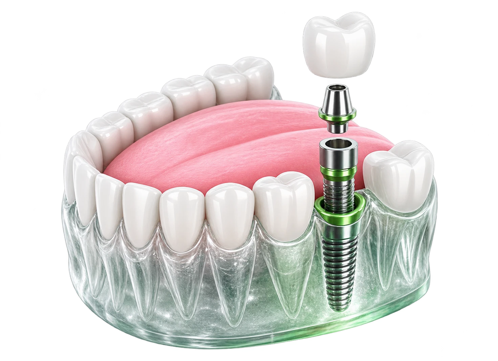
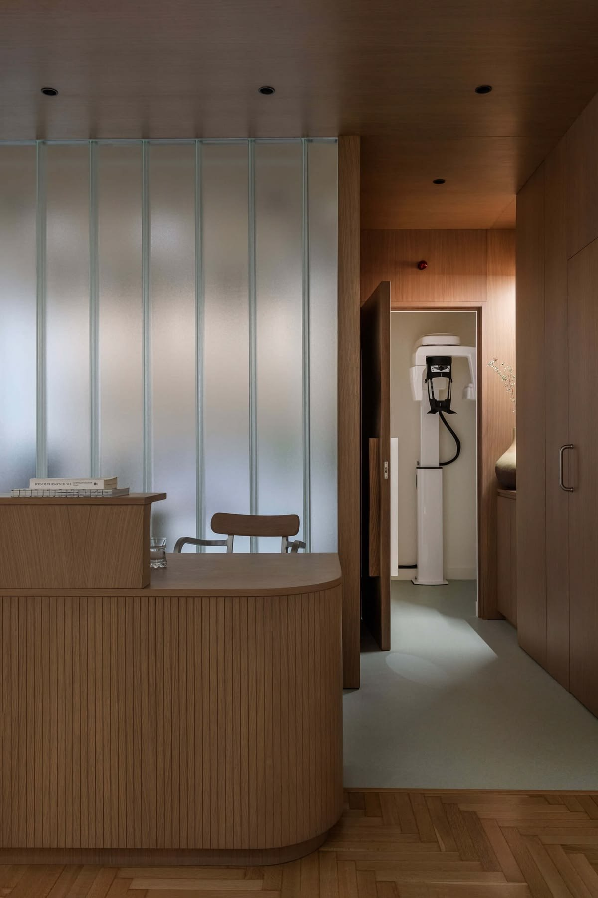

Кариес и пульпит лучше лечить на раннем этапе.
Стоматология в Астане
Улыбка, которойвы будете гордиться
Имплантация, лечение и протезирование там, где точность начинается до операции. Запись к врачу — онлайн.
Стерильность
по протоколу
по протоколу
С чем к нам обращаются
Как мы лечим
Лечение для любого клинического случая

Консультация и снимок
Осмотр, 3D-снимок и честный план лечения с ценой до начала работы.
Подробнее +План лечения
Врач показывает результат на модели и объясняет каждый этап простыми словами.
Подробнее +Лечение
Бережная анестезия, современные материалы и стерильные инструменты.
Подробнее +Контроль и гарантия
Осмотры после лечения, заключение врача сразу в вашей медкарте.
Подробнее +Когда пора прийти к стоматологу
Если узнали себя хотя бы в одном пункте — запишитесь на консультацию. Осмотр поможет выбрать лечение без лишних процедур.
Имплантация сохраняет соседние зубы и форму лица.
Восстановление за один день по протоколу All-on-4.
Профессиональная гигиена и лечение дёсен.
Виниры, элайнеры и отбеливание.
Врачи
Найти врача и записаться

Мы в Астане
- Адрес
- пр. Мәңгілік Ел, 55А
Левый берег, остановка «Хан Шатыр» - Часы работы
- Пн–Сб 09:00–19:00
Воскресенье — выходной - Контакты
- +7 (7172) 00-00-00
hello@medeo.kz
План лечения и записи в одном кабинете
- Запись и перенос времени без звонков
- Медкарта: заключения и рекомендации врача
- Профиль с вашим фото
Расписание и пациенты на одном экране
- Подтверждение записей в один клик
- Заключение пишется в карточке приёма
- Цена, часы и фото — в профиле
Администратор управляет составом врачей, видит все записи и пациентов.
Вопросы
Частые вопросы
Как записаться?
Выберите врача, дату и время на панели записи вверху страницы. Если кабинета ещё нет, система предложит его создать — это меньше минуты.
Можно ли отменить или перенести запись?
Да. В кабинете откройте «Мои записи» и нажмите «Перенести» или «Отменить». Время освободится для других пациентов.
Больно ли лечить зубы?
Мы используем современную анестезию, поэтому лечение проходит без боли. Если вы волнуетесь, скажите об этом врачу при записи.
Как зарегистрироваться как врач?
При регистрации выберите «Я врач» и укажите специальность. Цену, часы приёма и фото настроите в профиле.
Где хранятся данные?
Данные хранятся в базе PostgreSQL на сервере клиники, пароли — только в виде хеша. Это демо-версия, не вносите настоящие медицинские данные.